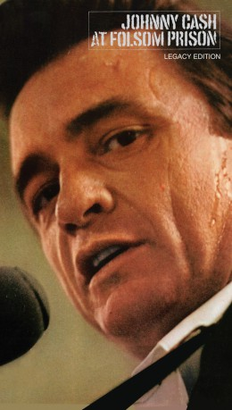

#7287 Johnny Cash at Folsom Prison
 
 IMDB-Wertung: 6.9 / 10
IMDB-Wertung: 6.9 / 10  Metascore: 0
Metascore: 0 
By 1968, Cash was still a star, but he was a man with sometime to prove as he sought to rise from a career slump brought on by a battle with drugs that took a toll on his body and spirit. That year, Cash performed a concert for the inmates of California's Folsom Prison, and the show was recorded for a live album. Cash delivered one of the greatest performances of his life that day, stark and heartfelt and full of empathy for the broken souls listening to his music, and the album that resulted was a surprise hit, reestablishing Cash as one of country music's most powerful and respected artists.
Jahr: 2008
Dauer: 83 Minuten
FSK:
Land: USA Studio: Northern Light ProductionsTonspuren:
Untertitel:
Auflösung: 720p (1278x716) Größe: 5027 MB
Genre: Musik, Dokumentation
Regisseur: Bestor Cram
Drehbuch: Michael Streissguth
Soundtrack:
Darsteller:
- June Carter Cash als Herself , archive footage
- John Carter Cash als Himself
- Johnny Cash als Himself , archive footage
- Rosanne Cash als Herself
- Merle Haggard als Himself
- Marty Stuart als Himself
- Gene Beley als Himself
- Jim Brown als Himself
- Millard Dedmon als Himself
- Marshall Grant als Himself
- Earl Green als Himself
- W.S. Holland als Himself
- John D. Loudermilk als Himself
- Jim Marshall als Himself
- Lou Robin als Himself
- Bruce Sherley als Himself
- Ronda Sherley als Herself
- Jimmy Tittle als Himself
Datei: X:\Musik\Johnny Cash at Folsom Prison (2008, FSK, 1278x716).mkv seit 12.10.2017
Festplatte: HD Serien(SU-Z)+Dokus+Musik
 Es gibt insgesamt 134 Filme in der Gruppe 'Musik'
Es gibt insgesamt 134 Filme in der Gruppe 'Musik'